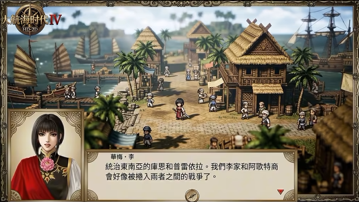

基于截图补绘的重建素材。行走图为动作参考，斜向、步幅与脚底仍需在实际场景中检验；遮挡部分和阴影形状含推测。
使用说明 · 动画坐标 · 图片参数 · 生成提示词
外围框 · 1920×1080
重绘纹饰后定尺导出，透明中心。可按 1:1 查看实际像素。
下载 1920×1080 PNG
八方向行走 · 最终图集预览
帧 1 / 4
统一 128×192 格子，脚底锚点 (64,180)。主角右上方向已使用单独补绘帧。最终图集都在 atlases 目录。
主角 · 蒂雅
下载最终八方向图集
512×1536 · 32 帧 · 单格 128×192NPC · 深蓝帽船员
下载最终八方向图集
512×1536 · 32 帧 · 单格 128×192NPC · 浅色头巾工人
下载最终八方向图集
512×1536 · 32 帧 · 单格 128×192NPC · 草帽蓝衣行人
下载最终八方向图集
512×1536 · 32 帧 · 单格 128×192NPC · 棕衣商人
下载最终八方向图集
512×1536 · 32 帧 · 单格 128×192独立场景物件
阴影与主体位于同一 PNG；换底色可检查半透明效果和边缘。
左侧近景帆船
补全画面左边缘裁掉的船体；包含水线暗影和局部倒影。
1341×1173 · RGBA下载 PNG ↗
左侧中景货船
包含甲板货物与水线倒影。倒影带有颜色，须在实际海面上检查融合。
1374×1145 · RGBA下载 PNG ↗
道路左侧棕榈
细长树干与完整叶冠，含半透明地面投影。可复制组合成截图中的树丛。
1217×1293 · RGBA下载 PNG ↗
道路右侧棕榈
倾斜树干与较宽叶冠，含半透明地面投影。
1217×1292 · RGBA下载 PNG ↗
中央左侧尖顶茅草屋
补全被树遮住的墙面和门口，附带地面投影。隐藏结构为推测。
1188×1324 · RGBA下载 PNG ↗
中央后方双层茅草屋
小型坡屋顶、木栏杆、上下层门窗，附带地面投影。隐藏结构为推测。
1312×1199 · RGBA下载 PNG ↗
原截图

规格与限制
本轮素材说明
本包为截图参考重建，使用内置 image_gen 生成与修正。不是从游戏程序中提取的原始资源。原截图为 724×408。
最终交付 12 项：5 套八方向行走图、2 艘帆船、2 种棕榈、2 座中央茅草屋，以及 1920×1080 外围框。
一、外围框
generated/outer_frame_1920x1080.png：精确 1920×1080，RGBA，保留透明中心。重绘了金属花饰、链状边线与顶部卷草。
generated/12_outer_frame_hd_source.png：内置生成工具返回的 1672×941 重绘源图，使用 FFmpeg Lanczos 定尺导出至 1920×1080。
这是重新绘制后的定尺导出，不是游戏官方高清原图；并非原生 1920×1080 生成，边缘仍可能有少量抗锯齿彩边。中央极少像素 Alpha 为 1–2，肉眼近乎透明。
二、主角与 NPC
请使用 atlases/ 下的五张最终图集，每张 512×1536，4 列×8 行，每格 128×192，脚底锚点 (64,180)。
从上到下行顺序：
0 下 S；1 左下 SW；2 左 W；3 左上 NW；4 上 N；5 右上 NE；6 右 E；7 右下 SE。
每行四帧从左向右播放。建议先用 6 fps 试播；这不是原游戏帧率。
主角右上方向单独补绘并合入最终 atlas。generated/01_hero_walk_8dir.png 是未合并补帧的中间源图，请不要拿它替代最终 atlas。
generated/13_hero_ne_walk_patch.png 是右上方向补帧源图。
NPC 名称按外观区分，并非已确认的游戏身份。依据截图位置：
深蓝帽船员约 (297,277)，浅色头巾工人约 (537,242)，草帽蓝衣行人约 (609,244)，棕衣商人约 (633,225)。
没有把所有远景小人逐个当成不同身份；选择了四种清楚的外观。
animation_manifest.json 记录方向、各帧矩形、原始取样坐标和来源。使用 FFmpeg 进行裁格、最近邻缩放及图集打包，未用程序补画角色。
脚底位置已按可见像素下缘对齐，但这不是严格的骨骼脚底，仍可能有滑步、轻微尺寸漂移。NPC 的部分斜向与正向差别较小。四帧动作幅度较小，适合原型试用，未达到最终商用品质动画。
三、场景物件及阴影
两艘帆船、两种棕榈、两座中央茅草屋各自为独立透明 PNG。物件与其阴影在同一张图中，阴影没有单独分层。
棕榈和房屋为半透明地面投影，船为水线暗影/倒影，不把船画成地面落影。
图片中的主体朝向、阴影方向和光照已绘制在图上；如改变场景太阳位置，需要重新制作阴影。
帆船倒影含固定水色，在不同水面可能看出边界；需要在目标海面上检查融合。
单张截图无法恢复被遮挡结构、真实模型、材质贴图或真实运动；所有补全部分为推测。
截图中右侧主草屋沿用第一版，此轮新增的是中央两座不同房屋。
四、文件
preview.html：离线画廊与动画预览。浏览器打开即可；可切换八方向、帧率和物件底色。
atlases/：优先使用的最终五套动画图集。
generated/：场景物件、外围框、生成源图和主角补帧。
prompts.json：生成及修正提示词。
image_metadata.json：尺寸、真实透明通道检查与可见范围。
pack_atlases.py：图集重打包脚本，依赖 Pillow、NumPy 与 FFmpeg。
本版独立保存，第一版素材未覆盖。